01 · S11 鈷藍朱紅極簡平塗
晚霞的方向
Where Dusk Leads
慢下來，才看見歸途。
Slow down. See the way home.
60 秒＝片頭 5 秒＋10 鏡各 5 秒＋片尾 5 秒。共 15 張定稿圖片。點擊圖片可查看原圖。影片部分交付雙語生成提示詞。
完整製作規格 · 中文字幕 · English captions
角色設定與共同體型

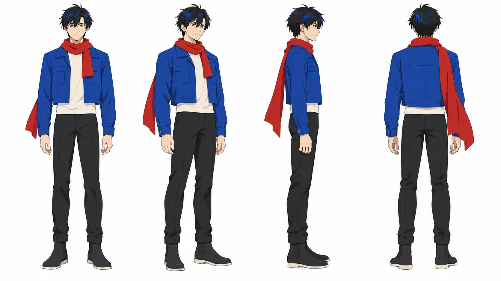
正面、45 度側面、側面、背面

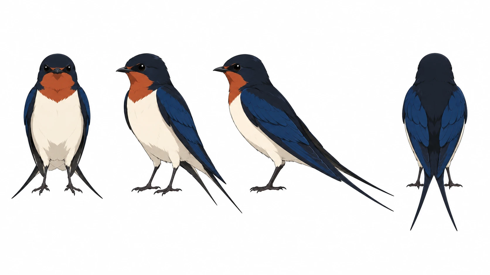
黑藍背、米白腹、朱赭喉斑與尖長叉尾

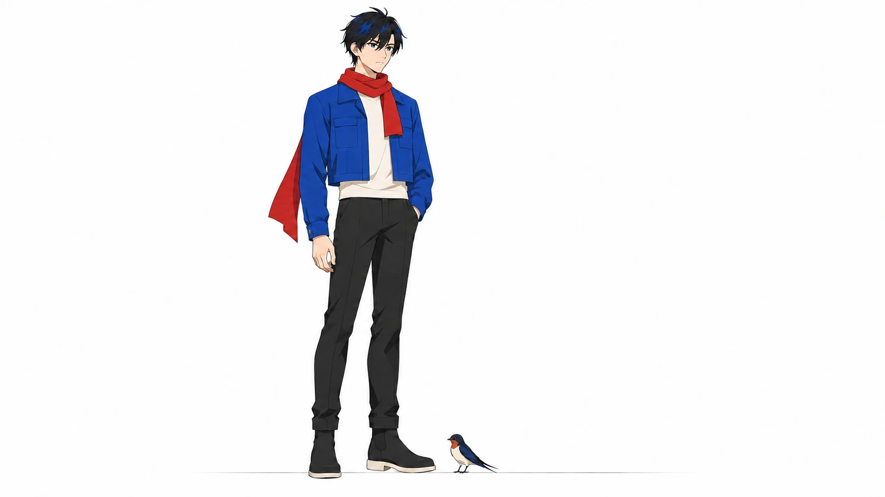
同景深：175 公分青年／約 14 公分站高燕子
片頭與片尾｜2026-10-23 獨立構圖改版

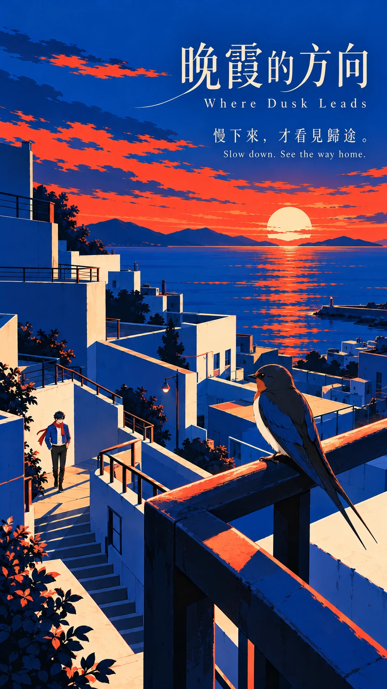
相遇前的屋頂俯瞰｜獨立構圖改版

巢邊望向遠去的背影｜獨立構圖改版
十張分鏡

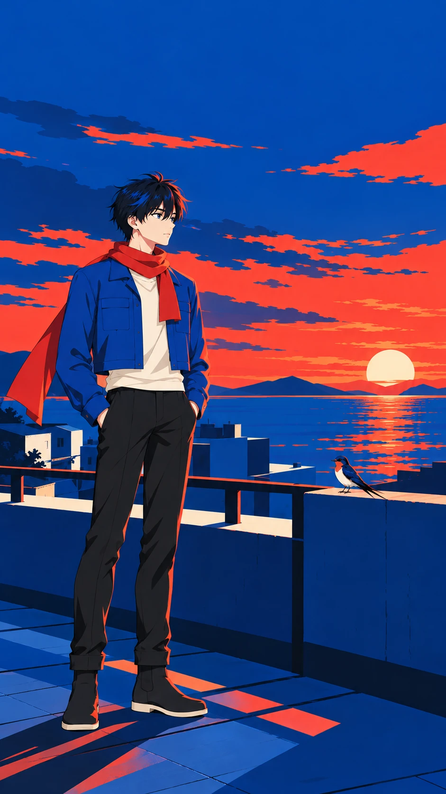
5–10 秒 · 天色漸晚你往哪裡 / Where will you go at dusk?

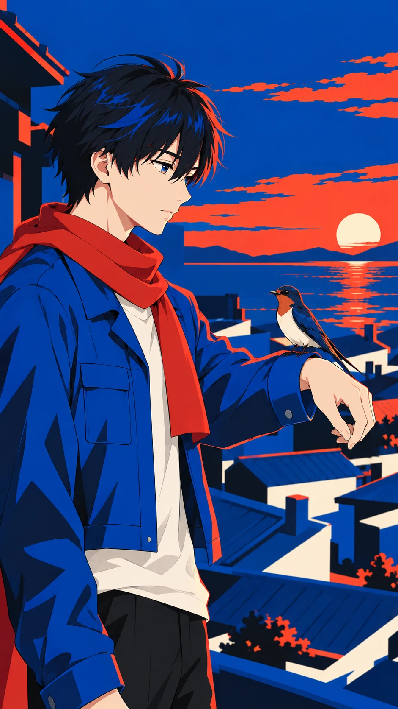
10–15 秒 · 我想替你找到家 / Let me help you home.

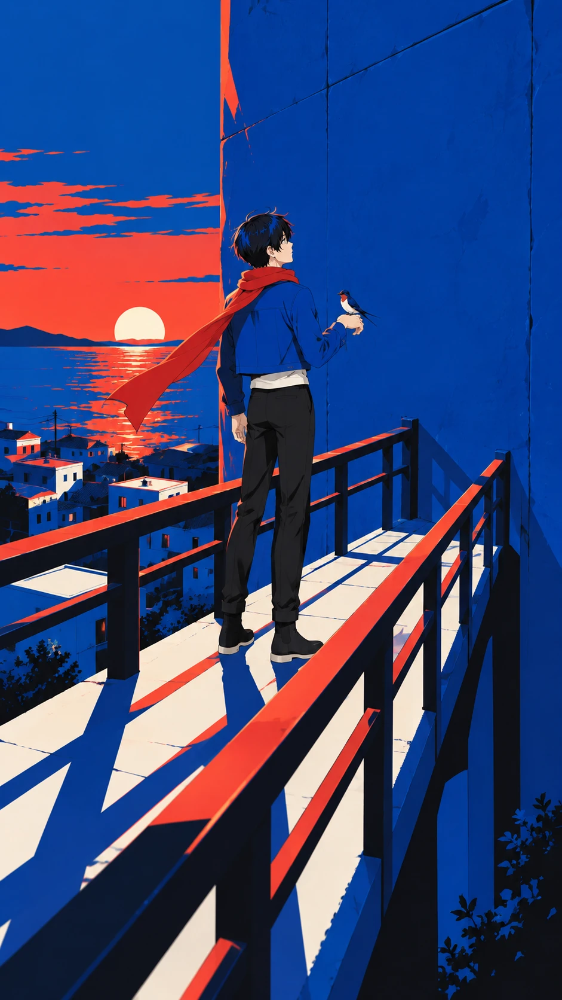
15–20 秒 · 風卻吹亂了方向 / The wind turns us around.

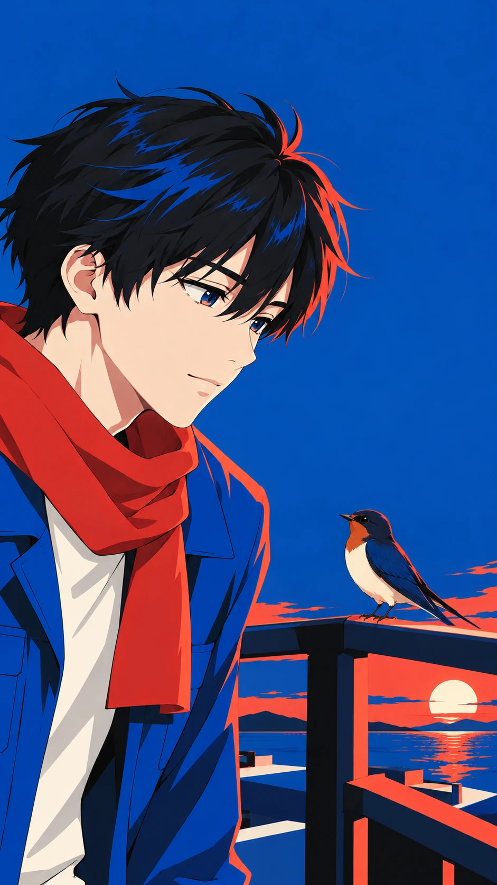
20–25 秒 · 那就陪你停一下 / Then let's pause together.

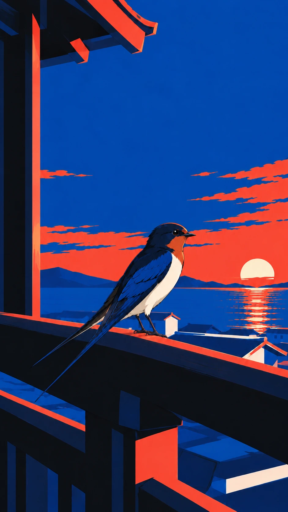
25–30 秒 · 原來你一直記得 / You remembered all along.

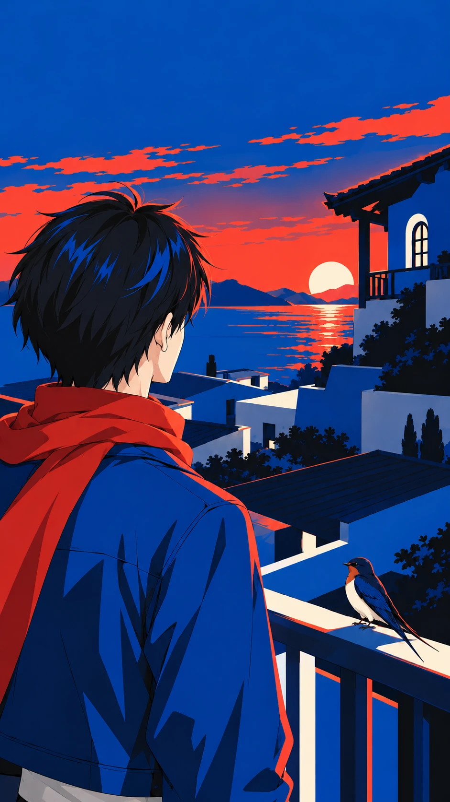
30–35 秒 · 那抹紅還在等你 / That red glow waits for you.

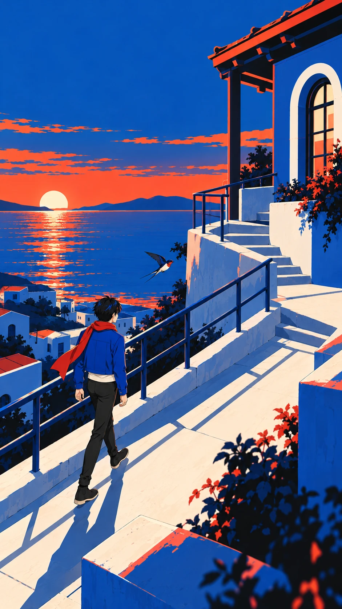
35–40 秒 · 這次換我跟著你 / This time, I'll follow you.

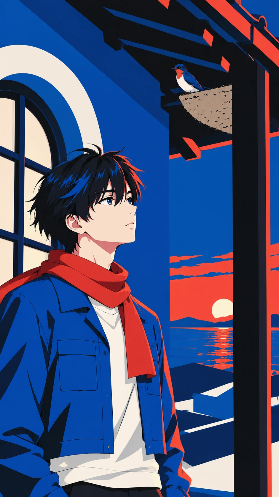
40–45 秒 · 小小屋簷接住你 / These eaves welcome you home.

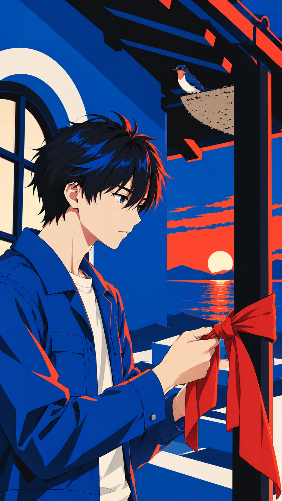
45–50 秒 · 留一抹紅等你回 / A little red to guide you.

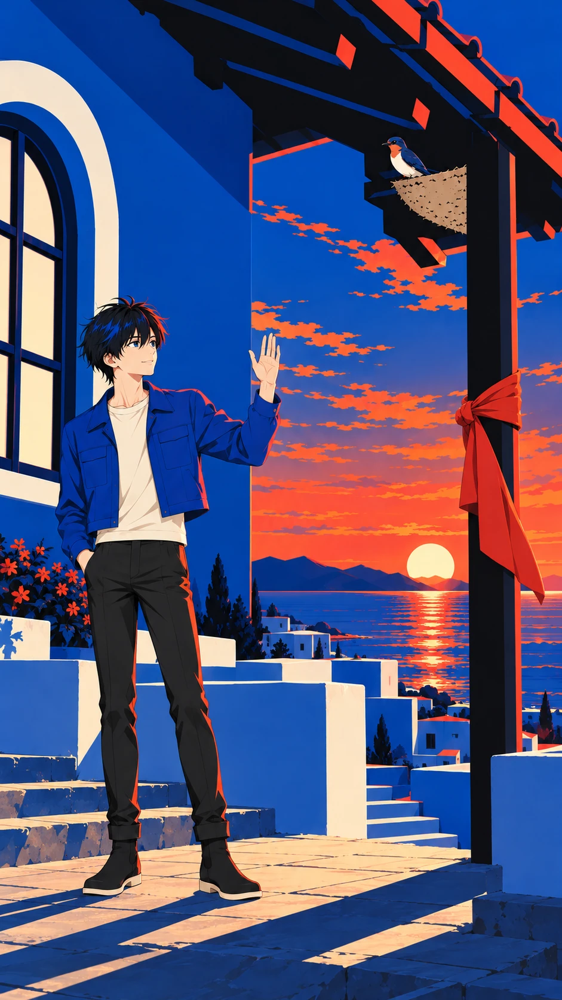
50–55 秒 · 你有歸處我便安心 / You're home. My heart rests.
角色圖為橫式 16:9 構圖，海報及分鏡為直式 9:16 構圖。原始像素尺寸含生成工具的取整差異；精確輸出方式與逐檔尺寸記錄見完整製作規格及資產清單。